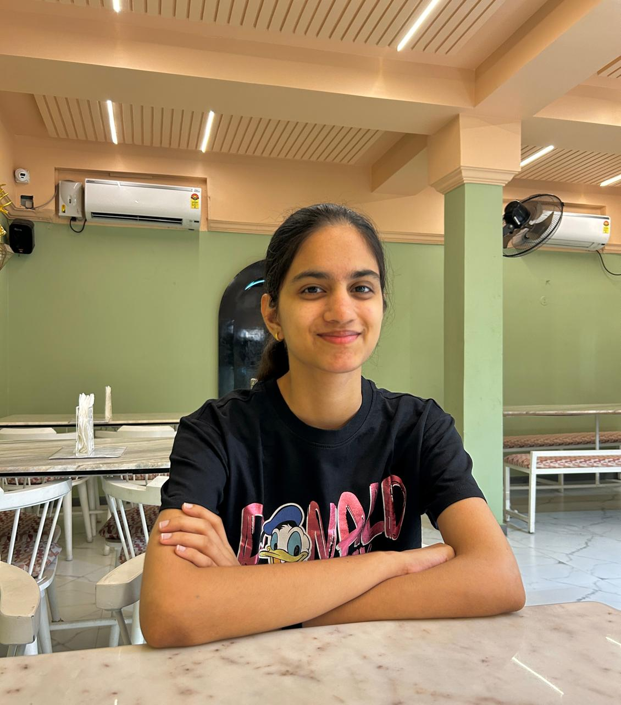

Jyothika Reddy Naru

Summary
Dedicated B.Tech Computer Science Engineering student at VIT-AP with a keen interest in web development. Passionate about designing and building user-friendly websites and web applications. Eager to learn and implement modern technologies to deliver innovative solutions and enhance user experiences.
Education
- B.Tech Computer Science - VIT-AP (2022-2026)
Skills
- Languages: Java,Python,R,html,css,JS
- Tools and Platforms: Github,VS code,Intellij Idea
- Courses: Data Structures and Algorithms,Operating Systems,Object-Oriented Programming
Certifications
- AWS Cloud Foundations
- Google Gen AI
- Aritficial Intelligence Using Google Tensor Flow
Additional Information
- Languages: English,Telugu,Hindi
- Skills: Problem Solving,Creative,Time management